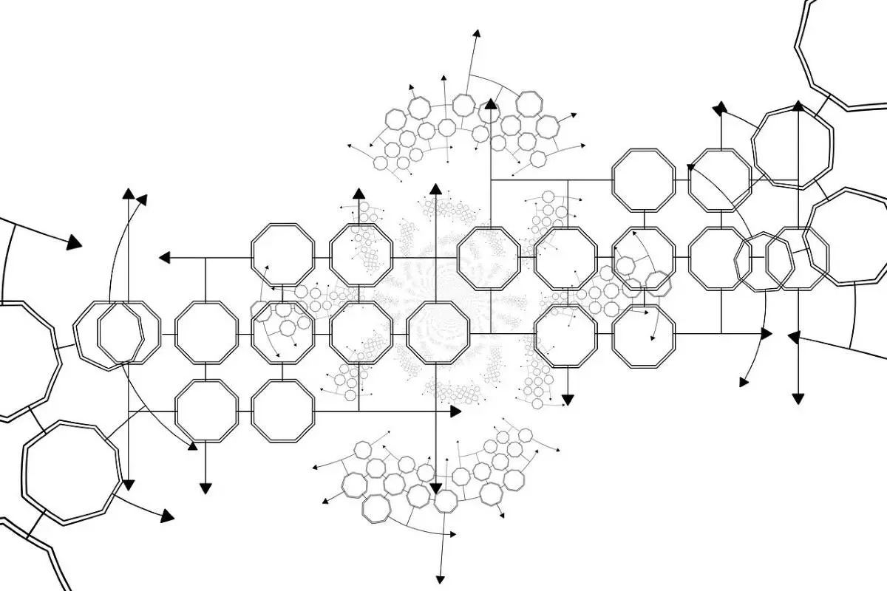
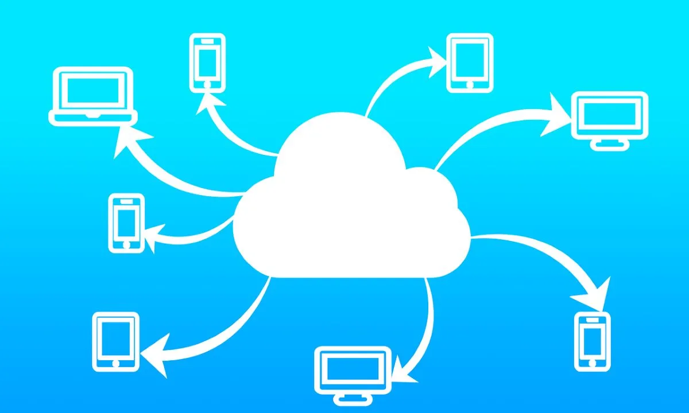

Table of Content
- 1. What is Computer Networking?
- 2. Why is Networking Important?
- i) Facilitates Communication
- ii) Resource Sharing
- iii) Access to Information
- iv) Remote Work and Collaboration
- v) Security Measures
- vi) Cost Efficiency
- vii) Entertainment and Social Interaction
- 3. Advanced Topics in Computer Networking
- i) Software Defined Networking (SDN)
- ii) Network Function Virtualization (NFV)
- iii) Internet of Things (IoT)
- iv) 5G Networks
- v) Network Security Protocols
- vi) Cloud Computing and Networking
- vii) Network Automation
- Conclusion
- Frequently Asked Questions
The Importance of Computer Networking
Computer networking is one of the most important parts of our modern world. It connects computers and devices, enabling them to communicate and share information. We will explore why networking is essential in our lives, its benefits and some advanced topics that aren’t often discussed such as SDN, NFV, IoT, 5g network and so more. Let's explore why computer networking is important and why networking is important in computer.
What is Computer Networking?

Before discuss into its importance of Computer Networking, let’s clarify what computer networking means. At its core, computer networking is connecting computers and devices so they can exchange data.
This can happen over short distances like in a home or office or long distances like the internet. Networks can be wired (using cables) or wireless (using Wi-Fi or cellular signals).
Why is Networking Important?
i) Facilitates Communication
One of the most significant advantages of computer networking is that it makes communication easier. We use various tools like emails, messaging apps and video conferencing to talk to people around the world.
For example, a student can discuss a project with classmates who are miles away or a business man can hold meetings with clients in different countries.
This ease of communication in both personal and professional settings.
ii) Resource Sharing
Networking allows multiple users to share resources. For example, in an office, several employees can use the same printer or scanner, which saves money and space.
Similarly, a home network lets family members share a single internet connection like Wi-Fi connection, which is more efficient than each having their own.
iii) Access to Information
Internet is one of the best sources of collected information. Networking allows us to access this wealth of knowledge. Whether it’s research for school, tutorials or online courses, being connected helps us learn and grow.
This easy access to information has transformed education and made it more interactive.
iv) Remote Work and Collaboration
The increase of remote work has made computer networking even more important. Employees can work from home and still access their company’s files and applications.
Networking solutions like Virtual Private Networks (VPNs) ensure that these connections are secure. This flexibility has become essential and especially in the wake of the COVID-19 pandemic.
v) Security Measures
As networking grows, so do concerns about security. Good networking practices involve implementing security measures to protect data from cyber threats.
Security Measures using firewalls, encryption and antivirus software. Organizations especially need to protect their personal information to prevent data breaches.
vi) Cost Efficiency
Networking can save money. Businesses can reduce costs by using fewer physical resources and sharing devices and accessing cloud services.
For individuals, having a single internet connection in a household is more affordable than each person having separate connections.
vii) Entertainment and Social Interaction
Networking also plays a significant role in entertainment. Streaming services, online gaming and social media depend on networks to function.
These platforms allow us to connect, share experiences and enjoy content together and regardless of physical distance.
Advantages of computer network
While many people understand the basic functions of computer networking but several advanced topics are less commonly discussed. Here are a few of those important concepts:-
i) Software Defined Networking (SDN)
Software Defined Networking is an innovative approach that separates the network control layer from the physical hardware. In traditional networking, the hardware like routers and switches controls the flow of data.
However, in SDN a software application manages the network, allowing for more flexible and efficient management.
This means changes can be made quickly without needing to reconfigure the physical devices. This is especially useful for large organizations with complex networks.
ii) Network Function Virtualization (NFV)
Network Function Virtualization involves running network services on virtual machines instead of dedicated hardware.
NFV reduces costs and allows for more flexibility. For example, instead of using a physical firewall, an organization can use a virtual firewall that can be easily updated and scaled according to need.
NFV helps in optimizing network resources and improves the speed of deploying new services.
iii) Internet of Things (IoT)
The Internet of Things (IoT) refers to the improve network of devices connected to the internet. Example of smart home devices, wearable technology and industrial machines.
IoT creates vast amounts of data that need to be managed effectively. As the number of connected devices grows, understanding how to secure and manage these connections becomes increasingly importance of networking in computer.
iv) 5G Networks
5G is the fifth gen of mobile network. It promises much faster data speeds, lower latency and the ability to connect more devices at once.
This opens up new possibilities for applications like augmented reality (AR) and smart cities. Understanding the impact of 5G on networking and how it can transform industries is a best topic in the tech world.
v) Network Security Protocols
The increase in cyber threats and virus, advanced network security protocols are essential. Concepts like zero trust architecture challenge the traditional approach of trusting users inside a network while being careful of outsiders.
In a zero-trust model, trust is not granted by default to any individual or entity, whether inside or outside the network.
This approach requires continuous verification of all users and devices trying to access the network.

vi) Cloud Computing and Networking
Cloud computing has changed how we think about networking. Rather than depending exclusively on local servers, businesses now use cloud services to store data and run applications.
This shift requires an understanding of how to connect securely to cloud environments, manage bandwidth and ensure data is accessible from anywhere.
vii) Network Automation
As networks become more complex, automation is becoming essential. Tools that automate network management tasks, like configuration, monitoring and troubleshooting and help reduce human error and increase efficiency.
Network automation also enables organizations to scale their operations quickly and respond to changes in demand.
Conclusion
In summary, computer networking is important for communication, collaboration and accessing information the importance of computer network in our daily life. It enhances our ability to work, learn and connect with others.
As we look to the future, understanding both the basic and advanced aspects of networking is essential.
The Importance of Computer Networking Topics like Software Defined Networking, IoT and cloud computing will shape the way we interact with technology.
By recognizing the importance of networking, we can better prepare ourselves for the challenges and opportunities of a connected world.
Frequently Asked Questions (FAQs)
what are the 5 importance of computer networking?
The 5 importance of computer networking is Communication, Scalability, Data Management and Security, Resource Sharing and Cost Efficiency.
What is the importance of computer networking in education?
Computer networking in education is important because it allows students and teachers to easily share resources, like files and learning materials, over the internet. It also helps in communication through emails and online platforms, making collaboration on projects much easier and more efficient.
Tell me more about network protocols.
Network protocols are sets of rules that allow computers to communicate with each other. They define how data is transmitted and received and ensuring that devices can understand each other and work smoothly.
How does Wi-Fi work?
Wi-Fi works by using radio waves to send and receive data between users device and a router. The router connects to the internet and broadcasts signals and allowing devices like smartphones and laptops to access the web without wires.
What are the different types of networks?
There are many types of networks but main networks is i) Local Area Networks (LAN) such as home or school networks ii) Metropolitan Area Networks (MAN) such as city connections networks iii) Wide Area Networks (WAN) is a larger networks like big cities or countries networks.
Recent Post
- Difference between narrow ai and general ai
- How AI is used in agriculture
- Janitor AI full details in depth with example
- What is the primary advantage of using generative ai in content creation
- ChatGPT features list, JBot, limitations, and benefits for you.
- The importance of computer networking & advantages of network